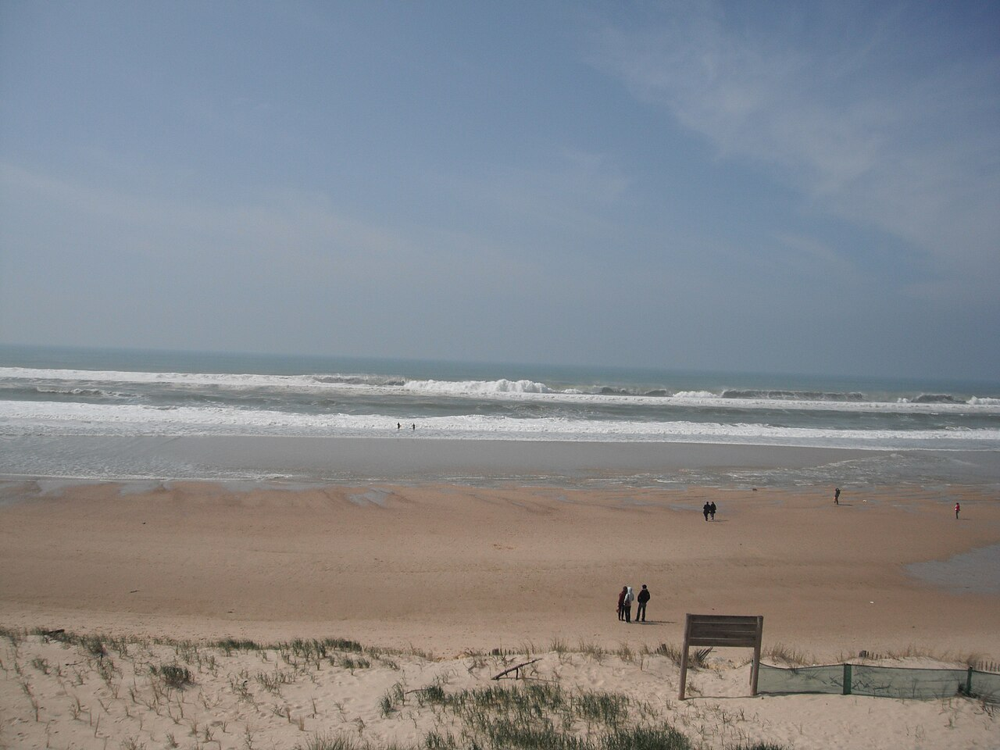

Lacanau Océan
Gironde, France · surf

Spot polyvalent très populaire avec de nombreux pics. Idéal pour progresser : vagues régulières, ambiance détendue et écoles de surf à proximité.
- Lieu
- Gironde, France
- Niveau
- Intermédiaire
- Activités
- surf
- Type d'eau
- Mer / océan
- Coordonnées
- 45.00, -1.20 (position approximative du secteur)
Dangers à connaître
- Baïnes présentes, repère les zones de courant.
- Affluence élevée l'été, attention aux collisions.
Le conseil d'Ocean Buddy
Spot parfait pour passer du niveau débutant à intermédiaire. Surfe le matin pour éviter la foule !
Ouvrir dans Ocean Buddy Télécharger sur l'App Store
Source : Description historique Ocean Buddy · vérification externe en attente.